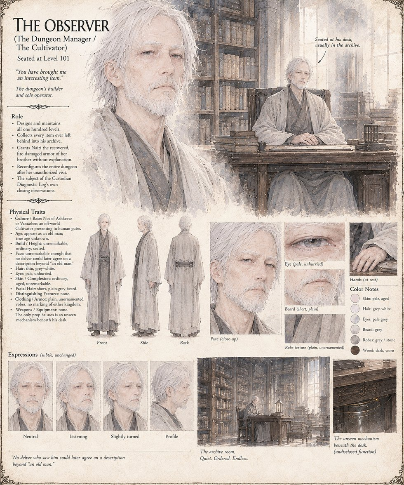

The Observer
The Dungeon Manager · the Catacomb's builder and sole operator · seated at Level 101
A field agent for the Cultivators, presenting in human guise as an ordinary, forgettable old man — no delver who ever saw him could later agree on a description beyond that. He designed and maintains all hundred levels, keeps every item any party ever left behind in an archive at the very bottom, and hands Nairi her brother's recovered, fire-damaged armor without a word of explanation. He reconfigures the entire dungeon in the aftermath of her unauthorized visit, and is the closing subject of Case 0157's own Custodian Diagnostic Log — which he apparently files himself.
“You have brought me an interesting item.”
Appears in The Stolen Prince War